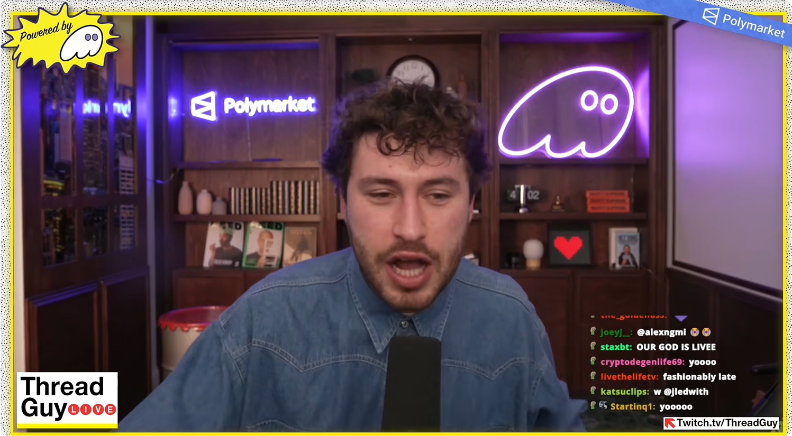
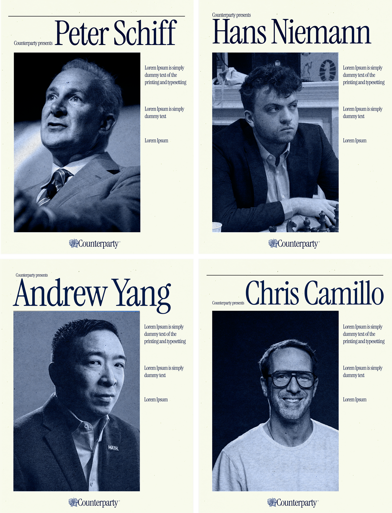

We did a complete overhaul of Counterparty for their new launch.
- Brand Identity
- Digital Design
- Animation
- Stream Overlay
- 3D Design
- Social Templates
- Social Banners
- Video
- Motion Graphics
The objective was to reposition the brand into a more premium, scalable, and institutionally credible direction while preserving core brand equity.

We kept the motif of the two opposed heads, but then built an entire new world around an elevated version. We swapped the yellow for an authoritative navy, and used iconic imagery from finance, heritage institutions, and New York City to craft a professional and iconic brand.
